[missing frame: LOOKS LIKE NOTHING INTERESTING HAS EVER HAPPENED HERE]
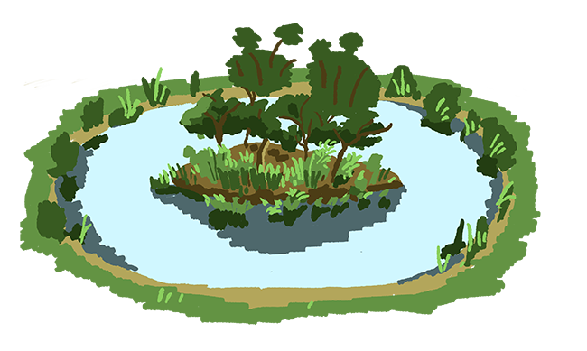 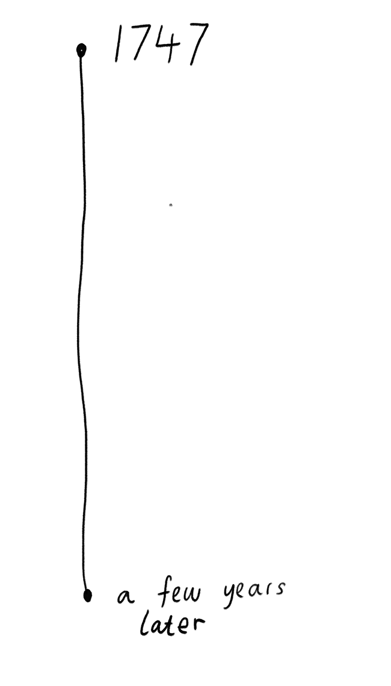
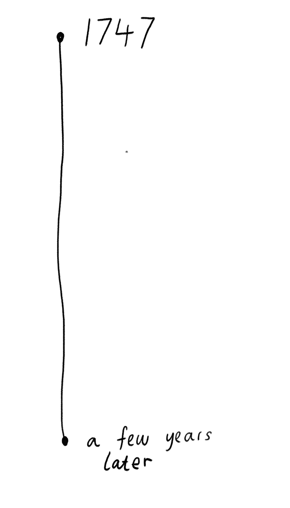
[missing frame: a pond is dug]
[missing frame: benjamin franklin]
[missing timeline: 1600s]
 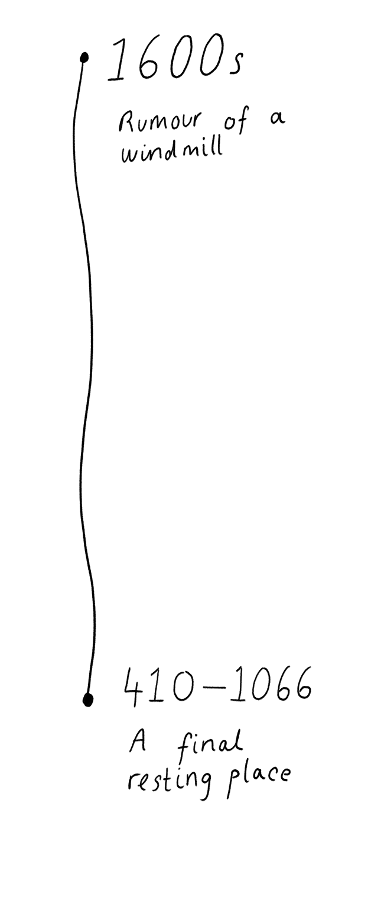
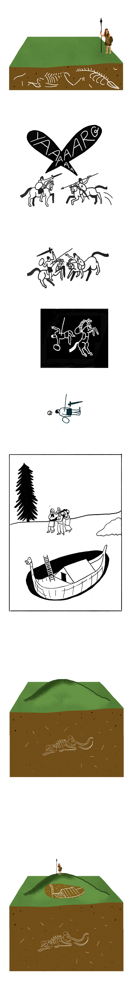
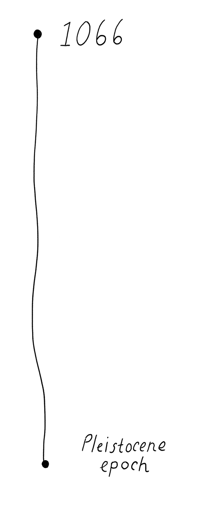
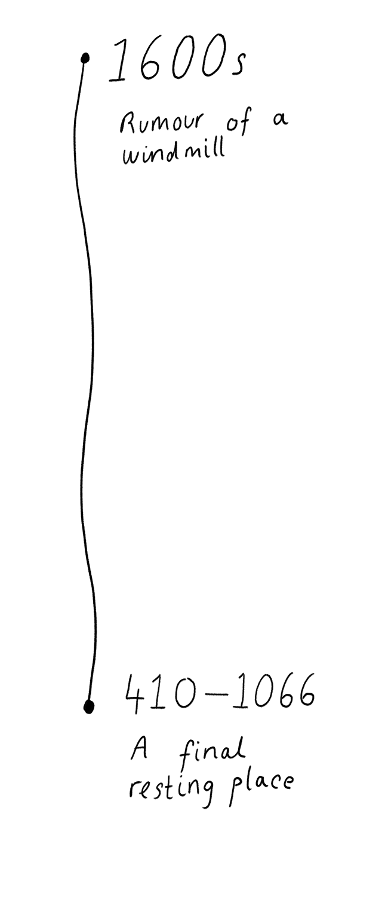
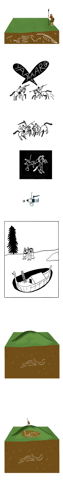
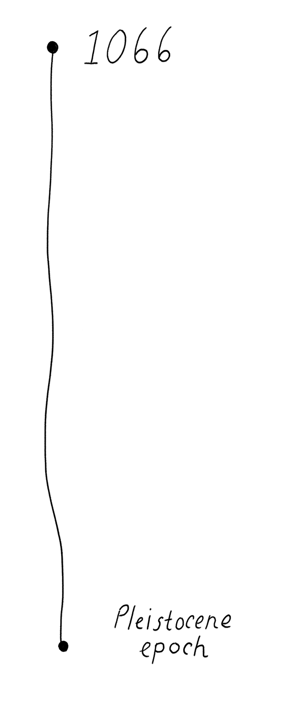
 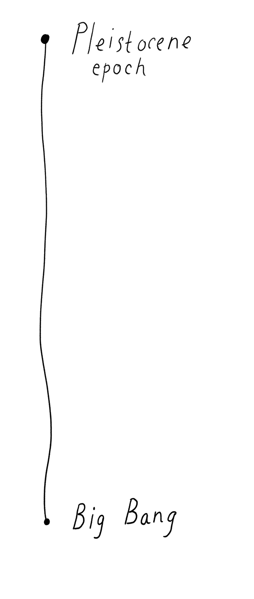
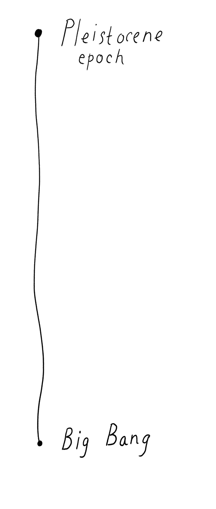
[missing frame: redraw big bang]